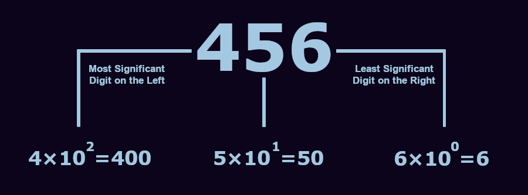
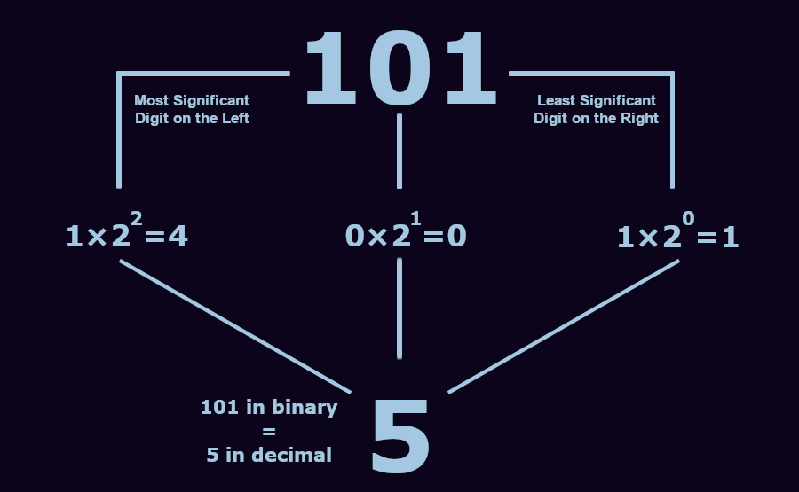
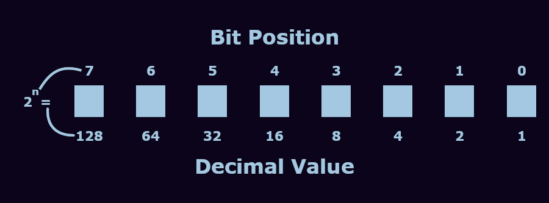
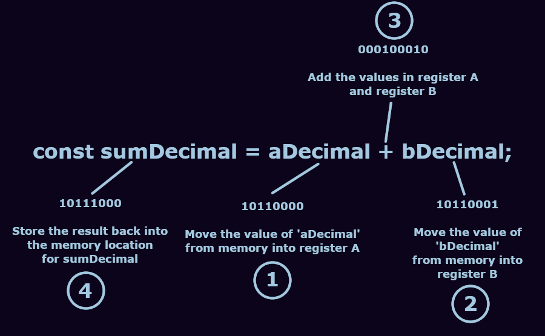

Binary is the name for the base-two number system, which forms the foundation for how computers operate.
In the base-10 number system that we use in our everyday lives, called the decimal system, each digitA digit is a single numerical symbol, numbers are made up of one or more digits in a number can be one of ten possible values: 0, 1, 2, 3, 4, 5, 6, 7, 8, or 9. Each digit’s position represents an increasing power of 10 applied to that digit’s value. Digits to the right have the lowest significance, and digits to the left have the highest significance, meaning that the digit furthest to the right is multiplied by 100Any number to the power of 0 will equal 1 since XY/XY = X(Y-Y) and XY/XY=1 so X0 will always be 1, the second digit counting left will have its value multiplied by 101 (10), and so on.
For example, if the number is 456
In binary, each digit can only be one of TWO possible values: 1 or 0. The position of each digit represents an increasing power of TWO applied to that digit’s value.
For example, if we take the binary number 101
101 in the binary number system is equal to 5 in the decimal number system, or "five"
Computers operate using electrical signals. These signals are controlled by small semiconductor devices called transistors. Transistors act like very tiny switches, meaning they have two possible states. A transistor can either allow or block the flow of an electrical signal, much like how a light switch can either allow electricity to flow to a light socket or block it from reaching the bulb.
While there are many different types of transistors, the ones generally used in processors are called MOSFETsMetal-Oxide-Semiconductor Field-Effect Transistor. These transistors have three main parts: the source, the gate, and the drain. The source has an electrical signal that is always being sent to the transistor, it is where electrical currentNote that when dealing with electronics and binary that terms like current (flow of electrons), voltage (electrical pressure), and signal (information carried by electrical charge) can all be used to describe the electrons moving through the system. All of these are treated as either "on" (1) or "off" (0) when dealing with binary systems. enters the transistor.
The gate is the control mechanism that determines the behavior of the transistor. Whether the gate has voltage being applied (“on” state) or not (“off” state) determines whether electrical current can flow from the source to the drain. The drain is effectively the output of the MOSFET, or where the current exits, and will turn on or off based on the gate’s state.
By clicking on the gate in the MOSFET diagram above, you can see how the state of the transistor changes, allowing the current from the source to flow to the drain. The source is always green, or “on,” since it is where current enters the transistor. The gate and drain change between green for “on” and red for “off” as you toggle the gate between states by clicking it.
These “on” and “off” states of transistors are used to represent bits. A bit is equivalent to a single binary digit, but instead of 1s and 0s, we use electrical signals from transistors that are either “on” or “off.” By using these bits, we can store and process digital information using the binary number system.
There are many ways to store information using binary, but one of the simplest ways is to make an array. An array is effectively a numbered list where each element of the list is indexed by a number, allowing quick access and storage of the information. In this case, the numbers being used to store and access information are binary numbers.
For example, if you wanted to type out a document, the computer needs some way of knowing what each letter looks like. You can put each letter of a language into an array like this:
[A, B, C, D, E, F, G, H, I, J, K, L, M, N, O, P, Q, R, S, T, U, V, W, X, Y, Z]
In this array, there are 26 items. A is at index 0, while Z is at index 25.
Index At Each Position of the Array
[0, 1, 2, 3, 4, 5, 6, 7, 8, 9, 10, 11, 12, 13, 14, 15, 16, 17, 18, 19, 20, 21, 22, 23, 24, 25]
So we could change a word like “the” to the numerical sequence “19,7,4” using this array. Or, using binary, we could say “10011,111,100” to describe the same locations in the array.
As you can see from this example, something towards the front of the array can be accessed with shorter numbers, such as A being at index 0 in both binary and decimal numbers, a single digit. But, as you move further into the array to a letter like “T,” the index number requires an increasing quantity of digits. As the 20th letter of the alphabet, T’s index in our array is 19, a two-digit number in decimal, but the same number in binary is already five digits, 10011.
This limitation was the primary reason for the decision to have eight bitsa bit represent a single binary digit in digital computing, either a 1 or a 0 in a byte. If you want to use a computer for word processing, you’re going to need more than just one set of uppercase letters like we have in our array. You’re also going to need a second set of characters for all the lowercase letters, you’ll need numbers, punctuation, and other special characters. For this reason, 8 bits was decided as the size of 1 byte, as this could hold a large enough integer to store 256 characters, which was deemed sufficient for all the characters required for text editing and other tasks.
This diagram shows the relationship between the position of each digit in a binary number and the value it has. You can also think of each box as a single bit, and all eight boxes together form a single byte of information. Each bit’s value when “on” is 2n, where n is that digit’s position in the number. The first digit, which is on the far right, has a position of 0, similar to how arrays start with index 0. So, as we discussed earlier, it has a value of one when turned on.
The furthest digit to the right has a value of 27, or 128. With all of the bits on, we have a total value of 255. With them all turned off, we can also count 0 as one of our numbers, so with an 8-bit number, we can only efficiently store 256 items in an array.
You can see more of how counting works with binary by clicking on some of the boxes to the left in the top two rows labeled A and B. At the bottom, you’ll see the row of bits that represents the sum of A and B updating along with a number that shows the value of that binary sum as a base-10 number. When these "bit boxes" on the left are green, the bits are “on,” which represents a 1, and when they are gray, they are “off,” representing a 0.
When you create an A and B value in the top two rows to the left that add up to more than 255, you’ll notice that all the boxes in the sum row turn red and that the base-10 value changes to say “overflow.” This is because with only eight bits, 255 is the highest number that can be shown, similar to how 999 is the highest number you can show with only three digits in the base-10 decimal number system. The next number higher than 999 is 1000, which requires a fourth digit. Likewise, displaying the value of any sum greater than 255 is not possible with only eight bits. When the sum exceeds this limit, it's called "overflow," since the number would require more than eight bits to be stored.
Another type of information sometimes stored in an array is color. If you’ve ever used a Nintendo Entertainment System, you’ve experienced 8-bit color. Since 8-bits can only count from 0 to 255, you have a limit of 256 colors that you can use for an entire game. The color information was stored on each game cartridge, and the 8-bit hardware of the NES would use binary to pull up the index of each color in that cartridge’s array.
As you click some of the boxes in the tool to the left, you’ll also notice a box at the bottom with the output values that changes colors as you toggle the bits in rows A and B between on and off. This color is coming from the Windows 95Windows 95 was a Microsoft operating system. While Windows 95 was not technically an 8-bit operating system, it had an 8-bit graphics mode 8-bit palette. Each number from 0 to 255 has its own unique color assigned to it, making up a palette of 256 colors.
Modern computers typically use other methods for storing color information, since they can work with a massive range of colors all at once and aren’t limited by processing power restrictions, memory limitations, and the like. However, this concept still forms the basis for how many types of information are stored and used on computers.
Transistors can be combined to form structures called logic gates. These gates take one or more inputs and perform a logical operation (specifically, a Boolean functionA Boolean function is a type of logical operation whose inputs and output take the form of a two-element set. Usually these are "true" and "false," but binary 1s and 0s are often used as well.) to determine whether the output should be a 1 or a 0 based on a set of rules. There are a variety of logic gates, but we’ll focus on only three here: AND gates, OR gates, and XOR gates.
AND gates work by turning on their output signal when both of their inputs are on (1). If we call the inputs A and B, we can say that AND gates only send a 1 when both A AND B inputs are sending a 1. By clicking on the A and B inputs below, you can see how the current can only pass from the source to the output of the circuit if both A and B are in their “on” states.
| Input A | Input B | Output |
|---|---|---|
| 0 | 0 | 0 |
| 1 | 0 | 0 |
| 0 | 1 | 0 |
| 1 | 1 | 1 |
OR gates output a 1 when either A OR B input a 1. OR gates also remain on when both A and B are on. This is the major difference between OR gates and XOR gates, which we'll look at next. Below, you can see a model of an OR circuit where either transistor being “on” will allow the source signal to reach the output. You can also see how this output signal remains on even when you switch both A and B to their "on" states.
| Input A | Input B | Output |
|---|---|---|
| 0 | 0 | 0 |
| 1 | 0 | 1 |
| 0 | 1 | 1 |
| 1 | 1 | 1 |
XOR stands for EXCLUSIVE OR. The XOR gate only outputs a 1 when EXCLUSIVELY one OR the other input is on. It outputs a 0 if both inputs are 1. To make this gate, we can use a device called a CMOSComplimentary Metal-Oxide-Superconductor. A CMOS uses two MOSFETs, one called a p-channel MOSFET and another called an n-channel MOSFET.
N-channel MOSFETs work exactly as we’ve previously described. When a signal is sent to the gate, current passes from a source to a drain, or output. P-channel MOSFETs, in short, work inversely to n-channel MOSFETs. When a voltage is applied to the gate of a p-channel MOSFET, it turns off. When no voltage is applied to the gate, the current is allowed to flow from the source to the drain.
In a CMOS, these two types of MOSFETs work opposite each other in a type of “push-pull” configuration. You can see by clicking the A or B gates, represented by the circles in the center of the diagram below, how the n-channel and p-channel transistors are always in opposite states to each other. This allows us to create a circuit that allows current through when only one of the gates is toggled, but turns off when both A and B are turned on.
| Input A | Input B | Output |
|---|---|---|
| 0 | 0 | 0 |
| 1 | 0 | 1 |
| 0 | 1 | 1 |
| 1 | 1 | 0 |
Using various arrangements of these logic gates we can perform all kinds of complex logical and mathematical operations (we’ll get back to this).
To get a computer to perform useful work, we need to provide it with a set of instructions that describe how to perform the work we want done. This is the broad premise of computer programming.
Most programming is done in what are referred to as “higher-level” languages. This means that the instructions we use to tell the computer how to perform a task are abstractedThe instruction sets of higher-level languages are more removed from the exact specifics of what is happening on the hardware, in favor of being more readable to a human user. away from what is actually happening on the hardware, whereas “lower-level” languages use instructions that are closer to how the tasks are performed at the hardware level. The abstraction of higher-level languages results in an instruction set that is easier for humans to intuitively recognize, make sense of, and use.
For example, one of the programming languages used on this page is called JavaScript, which is considered a high-level language. The line of JavaScript code that adds the A and B values in the tool to the left is:
const sumDecimal = aDecimal + bDecimal;
This may look fairly recognizable even to someone unfamiliar with programming. You can see that two values, aDecimal and bDecimal (these names are defined by the programmer) are being added together to create a sum, which is given the name sumDecimal. Since computers work using binary, these instructions need to be turned into something that the hardware of the computer can understand before it can be carried out.
To do this, a compiler or interpreter is used to translate higher-level code into what is called machine code. Machine code is a set of binary instructions that can be executed directly by the hardware, making it the “lowest-level” programming language.
For example, the line of JavaScript above that adds two values might come out of the interpreter as a sequence of machine code instructions that looks something like this:
| Machine Code | Explanation |
|---|---|
| 10110000 | Move the value of 'aDecimal' from memory into register A |
| 10110001 | Move the value of 'bDecimal' from memory into register B |
| 00010010 | Add the two values in register A and register B |
| 10111000 | Store the result back into the memory location for 'sumDecimal' |
The interpreter breaks this single line of code down into several operations that need to be performed at the hardware level. First, instructions are sent to retrieve the value “aDecimal” from a certain location in the computer's memory and move it onto CPU register A. Then, a second similar command is sent to retrieve the second value from memory and place it on another one of the processor’s registers, register B. Now that these values are in the processor's registers, the circuits can perform mathematical or logical operations using them.
With the two values now loaded onto the CPU, the instruction can be sent for the processor to add the values loaded onto register A and register B. Once the sum is calculated, this new value can be sent back to the memory with a new name for later use using one final instruction.
The instruction set being used varies depending on the architecture family of the processor. As chips have become more advanced over time, we’ve been able to introduce increasingly robust and complex instruction sets so processors can perform a wider variety of work with greater efficiency, but, ultimately, machine code is just a sequence of bits that tells the processor what to do.
You’ve now seen how transistors work, and how transistors can be used to form circuits called logic gates. Now, let’s look at how computers use these logic gates to do math. Continuing from our example earlier of adding two numbers, we can look at an example of a circuit that could be used for addition.
Below is a diagram of a circuit called a full adder. It has three inputs: A and B inputs that represent the values being added, and a carry input. These three inputs are processed to produce two outputs: a sum and a carry output. With all the inputs off, both of the outputs remain off as well, representing a sum of 0 since all of the inputs are 0.
If you turn one of the input values on, you’ll see the sum output turn on, meaning the circuit is outputting 1, since it has a total input value of 1. If you turn another of the three inputs on, you’ll see the sum output turn off and the carry output turn on.
Since binary only has two possible values for each digit, a single digit cannot go higher than one, so it must be carried to the next bit to the left, like how you “carry” the one when adding five and five to get 10. Likewise, adding 1 and 1 in binary results in 10, but in this case, 10 in binary has a value of 2 in decimal. A digit’s carry input is determined by the carry output of its preceding digit, and any digit’s carry output will determine the carry input of the following digit. This way, we can use many full-adder circuits to add large multi-digit binary numbers, as you can see to the left.
In the diagram above, you can see each of the logic gates of a full adder, and each of the transistors of those gates, like we looked at earlier. The box above will update with a description of each gate’s behavior as you change the inputs, so you can see how binary addition is performed using only transistors that switch on and off as you change the inputs.
To the left is an 8-bit binary addition circuit that uses eight full adders. Each digit’s carry output feeds into the next digit’s carry input, allowing you to add two numbers up to a maximum sum of 255, the highest number for a single byte.
There’s one small thing about MOSFETs that I have yet to mention, they’re small. The transistors used in processors today can be around seven to ten nanometers. For scale, each of the silicon atoms that these transistors are made of measures 0.2 nanometers wide, meaning a 7 nm transistor is roughly 35 atoms across. Modern processors contain billions of transistors packed into the space of a couple of inches.
The JavaScript that runs the tools on this page is around 500 lines in length. Each time you click on a box to the left, a function from within that code is called up to determine the new sum of the binary values you’ve created, output that sum, change the color of elements on the screen, and pull up a color from an array.
To do this, those lines of code are sent through an interpreter, which then translates the code into binary instructions, machine code, for the hardware of your computer to then process. The processing of the code is similar to what you see on the left with the eight full adder circuits. Transistors are used in specific arrangements to create logic gates, which can then be arranged to perform even more complex operations.
But in reality, this too is only a small view of a much bigger picture. The browser you’re using right now to view this page has somewhere in the range of 7 to 30 million lines of code, and the operating system that your computer is using likely has between 50 and 100 million lines of code.
These millions of lines of code are being processed at an incredible speed by the billions of transistors on your computer all the time, quietly flickering back and forth.